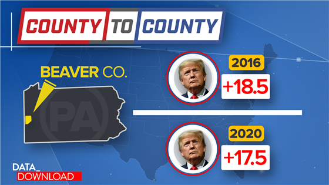
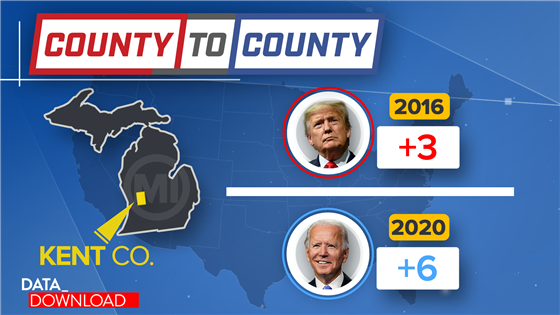
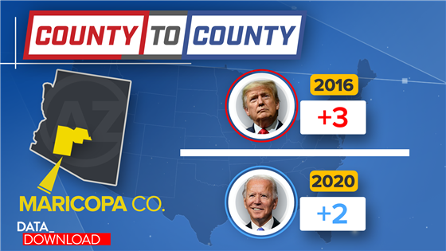
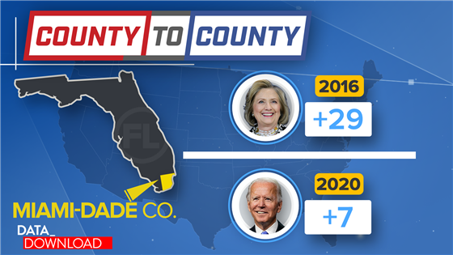
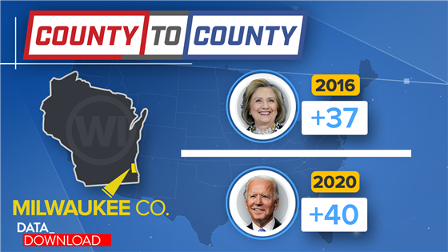

WASHINGTON — A little more than a year ago, the Meet the Press team identified five counties to watch as part of an effort called County to County. The goal was to use those counties to explore larger trends in the electorate to get a feel for how different kinds of voters were reacting during the 2020 campaign.
With the votes in, it's time to look into those five counties and how they explain the election. They turned out to be excellent barometers for the areas important to understand.
To begin alphabetically, it's worth looking at whether Beaver County in Pennsylvania, a blue-collar suburb of Pittsburgh that strongly supported President Donald Trump in 2016, continued to support president in this cycle. Early on it seemed likely to do so, with a little erosion in this crucial part of his base in Pennsylvania and in other Great Lake states.

It turns out that is largely what happened. Trump still won Beaver by a large margin, more than 17 points, but that was a point less than he won the county by in 2016. And that pattern appeared across the Upper Midwest, with Trump winning again in key blue-collar suburbs such as Macomb County in Michigan and Berks in Pennsylvania, but by less than four years ago — losses that would up being crucial in close states.
In Kent County, Michigan, the former home of Gerald Ford, the question was whether a long-time home of wealthier, establishment Republicans would stand by the president in 2020. Interviews and poll data suggested they were the kinds of Republicans who were most uncomfortable with him.

And indeed, Kent flipped and voted for Joe Biden this year, after backing Trump in 2016. The county swung by more than 9 points toward the Democrat. And there were similar swings in percentage, if not outright flips, in similar counties around the country, including Douglas in Colorado and Waukesha in Wisconsin.
In Maricopa County, Arizona, the question was how a massive growing and diversifying suburban area would respond to Trump after the suburban vote turned especially blue in 2018. Would those attitudes carry on in 2020 in a place such as the Phoenix metro area with its growing Hispanic population?

Maricopa, which Trump had won narrowly in 2016 by about 3 points, also flipped to Biden, with the Democrat winning it by a little more than 2 points. The total margin swing was a little more than five points and the win in Maricopa essentially propelled Biden to win the state of Arizona. And it’s worth noting that swings in the big diversifying suburban area around Atlanta was instrumental to putting Georgia in Biden’s column as well.
The County-to-County effort went to Miami-Dade in Florida for two connected reasons. The Florida voter landscape is different than other states and the “Hispanic vote” that analysts often describe as a single entity is actually an extremely complicated mosaic of people and interests. In particular, it seemed likely the Cuban and Venezuelan voters in the area might be more sensitive to the word “socialism.”

That thought proved to be accurate. Of the five counties in the group, Miami-Dade was the only one where Trump improved on his 2016 margin and by a massive 22 percentage points. Remarkably, the 2020 results show that Biden essentially got the same number of votes out of the county as Hillary Clinton did in 2016, but Trump got an additional 200,000 votes out of Miami-Dade, a county that is almost 70 percent Hispanic.
And County to County went to Milwaukee County in Wisconsin to see if Democrats could fire up and bring out their crucial base of African-American voters. A decline in the number of votes from Milwaukee was a big reason why Trump won Wisconsin in 2016.

And Biden did improve the Democrats’ margin and their turnout in Milwaukee this year. Not only did he do about 3 percentage points better than Hillary Clinton in the county, he netted roughly 20,000 more votes. It wasn’t a stellar performance for Biden in the county — Dane County, home of the University of Wisconsin turned out a lot more votes — but it was good enough.
Again, that story was repeated in other big cities in the upper Midwest, not massive turnout or margin, but better than 2016 and, overall, enough to get the ball across the goal line for Biden.
These five counties, and the five stories around them, turned out to be crucial elements of the 2020 campaign. And even though the election is over, the Meet the Press team won’t be abandoning the County-to-County approach to political coverage. Working with the data and county experts of the American Communities Project at George Washington University, the team plans to keep finding places that help explain the nation’s complicated political landscape.